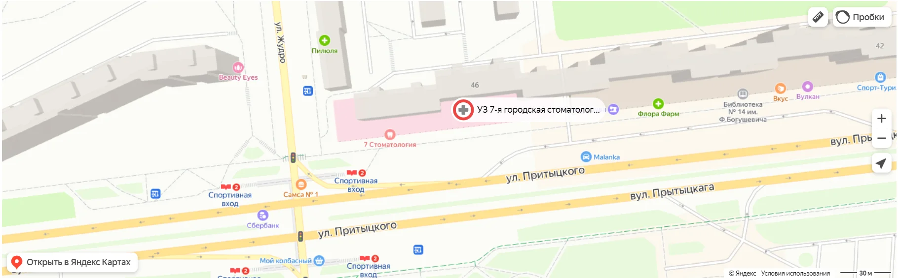

Стоматологическое терапевтическое отделение
Основное здание📍 ул. Притыцкого, 46
- ☎ +375 17 243-92-86 регистратура
- ☎ +375 17 243-97-84 зав. отделением
- ☎ +375 29 584-99-56 МТС
📍 ул. Притыцкого, 46
📍 ул. Притыцкого, 46
📍 ул. Притыцкого, 46
📍 г. Минск, ул. Нёманская, 46

Юридический и почтовый адрес:
220082, г. Минск, ул. Притыцкого, 46, пом. 3 Н
E-mail: help@7gsp.by
Приёмная главного врача: +375 17 224-22-84
Адрес: г. Минск, ул. Нёманская, 46
Регистратура: +375 17 368-82-06, +375 17 355-72-09
Мобильный: +375 29 856-79-14
МЕДИЦИНСКАЯ ИНФОРМАЦИОННАЯ СЛУЖБА 131 (СЛУЖБА 131)
социальный проект, позволяющий по единому номеру 131 получить информационную поддержку в области медицины, найти необходимую медицинскую услугу и записаться на нее в режиме онлайн в медицинские организации г. Минска.
ЗАДАЧИ
медицинская информационно-справочная поддержка населения;
заказ талонов на платные медицинские услуги в режиме онлайн;
бронирование медицинского такси;
поиск лекарств в аптеках;
организация лечения иностранных граждан в Минске (координатор медицинского туризма) и др.
СВЯЗЬ
по единому номеру 131 (действует на территории Республике Беларусь, звонок по тарифам операторов связи);
по международным номерам +375 (17) 243-41-43, +375 (29) 341-0-131
по электронной почте doctor@131.by
ОСТАВИТЬ ЗАЯВКУ можно на сайте 131.by.
РЕЖИМ РАБОТЫ
Служба 131 работает по будним дням с 8.00 до 20.00.

Звонок на короткий номер 169 позволяет:
Обращайтесь в аптечную справочную службу по телефону 169 понедельник-суббота 8:00 - 20:00, воскресенье: 10:00 - 18:00